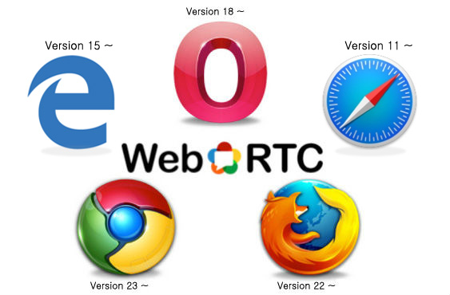
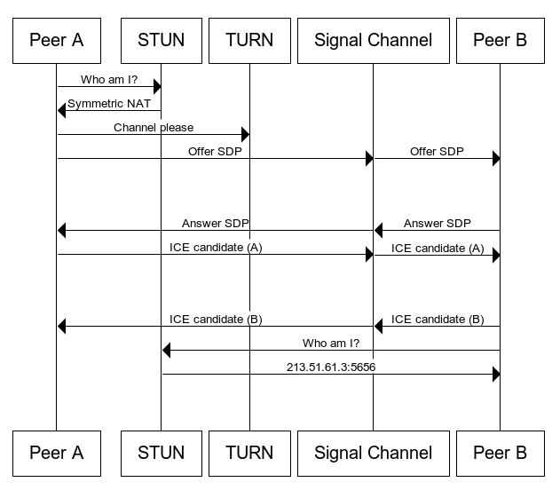

WebRTC 소개
WebRTC (Web Real-Time Communication)는 웹 브라우저 간에 플러그인 설치 없이 스트림과 데이터를 상호 통신할 수 있도록 설계된 JavaScript API이다.
WebRTC는 구글이 오픈소스화한 프로젝트에서 기원하였으며, 그 뒤로 국제 인터넷 표준화 기구(IETF)가 프로토콜 표준화 작업을, W3C가 API 정의를 진행하였으며, 음성 통화, 영상 통화, P2P 파일 공유 등으로 활용 될 수 있다.
WebRTC 지원 브라우저
최신 버전의 주요 브라우저들이 지원을 하고있습니다.

하지만 경험상 Edge브라우저는 개발과정에 디버깅이 힘들고 타 브라우저에 비해 성능도 떨어집니다.
Edge 크로미움 버전이 추후 나온다니 좋은 성능을 보여주기를 기대합니다.
경험상 크롬에서 먼저 개발하고 어느정도 안정화가 되면 브라우저를 확장해 나가는것을 추천합니다.
WebRTC 주요 API
GetUserMedia
사용자의 카메라와 마이크 접근을 담당GetDisplayMedia
화면공유를 위한 접근을 담당RTCPeerConnection
Peer간의 연결을 위한 인스턴스를 생성하고, 연결 후 스트림 전송에 사용 (생성시 STUN 서버 요청)RTCDataChannel
Peer간의 Data를 주고 받을 수 있는 Tunnel API (WebSocket과 유사하지만, P2P라 속도가 보다 빠름)
WebRTC P2P기반 NAT 및 방화벽 통과 기법
STUN (Session Traversal Utilities for NAT) 서버
사내망 환경에 NAT를 통해 공인IP, Port를 알아내는 역할을 함TURN (Traversal Using Relays around NAT) 서버
P2P 연결이 안되는 환경일때 트래픽을 중계하는데 사용함ICE (Interactive Connectivity Establishment)
P2P 간 다이렉트로 통신을 위해 STUN, TURN 등의 기술을 종합 활용하여 라우팅 경로를 찾아내는 기술로 UDP hole punching (P2P간 공인IP가 아니더라도 최대한 연결 가능하도록 하는 기법)을 지원.
WebRTC P2P 연결 절차
위 과정은 아래의 webrtc-internals 화면을 열어서 함께 보는것이 이해하는데 도움이 된다.
WebRTC Connection Step 확인
크롬 주소창에 chrome://webrtc-internals 입력하면 WebRTC 연결 흐름과 상태를 볼 수 있다.
실제 개발을 할 때 개발자 콘솔창을 보는 시간 만큼 자주 보게되는 화면이다.

WebRTC 활용한 서비스
- 화상회의
- 메신저 기반
- 교육
- 소셜
참고
작성자

codeJS 🐘
https://github.com/dodortussimple is best